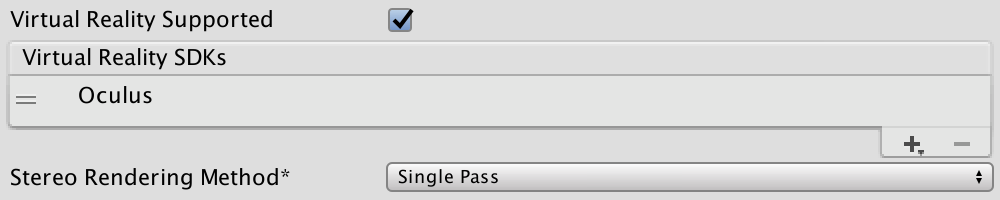
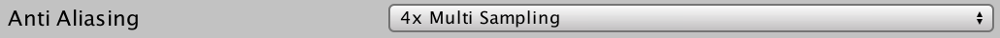
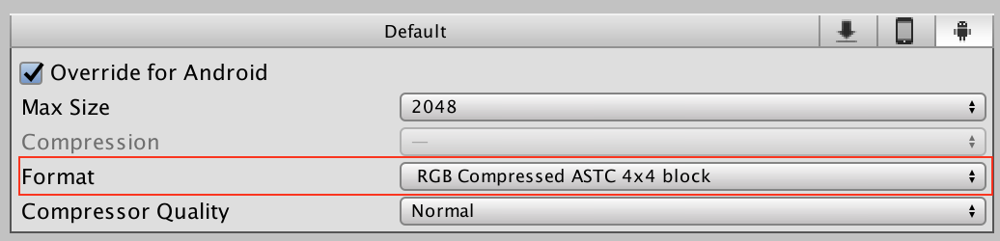
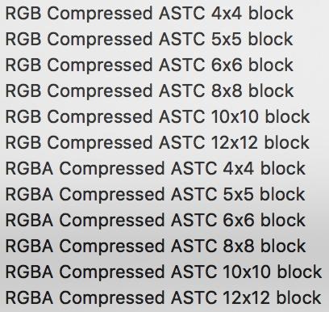
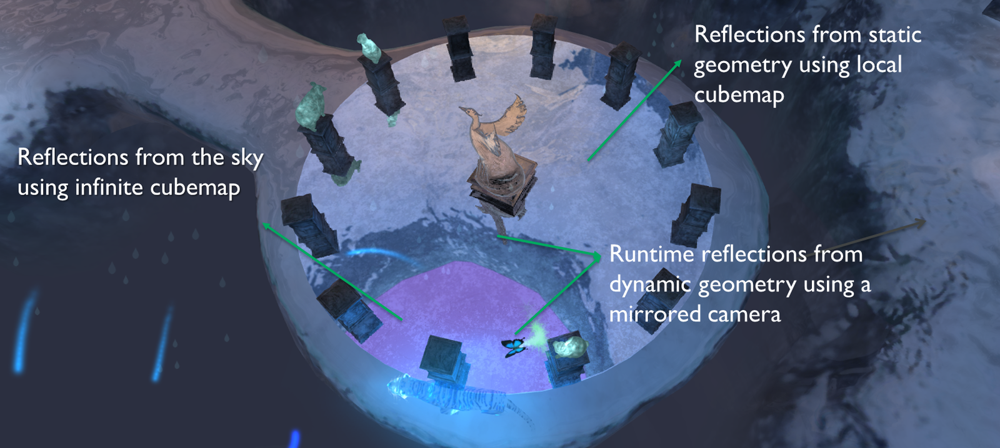
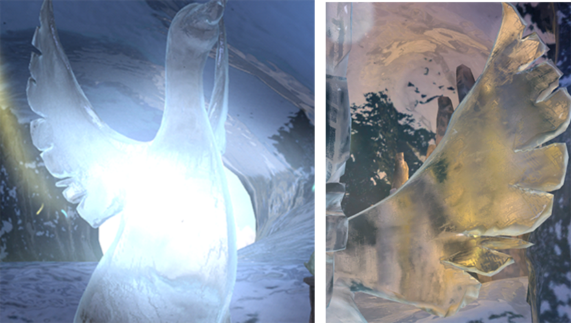

fragCycleBudget = (GPU 核心數 * GPU 時脈(Hz) / (目標 FPS * pixel 數)
vertCycleBudget = (GPU 核心數 * GPU 時脈(Hz) / (目標 FPS * 頂點數)
計算範例：
Device: Samsung Galaxy S7
GPU: Mali-T880 MP12
GPU 核心數: 12
GPU 時脈: 650M Hz
螢幕解析度: 2560 x 1440
pixel 數: 2560 x 1440 = 3686400
目標 FPS: 60
頂點數: 671,436
fragCycleBudget = (12 * 650M) / (60 * 3686400) = 35.265 ~ 35 cycles/frame/pixel
vertCycleBudget = (12 * 650M) / (60 * 671436) = 193.615 ~ 194 cycles/frame/vertex
1. Draw-call by Draw-call stepping
2. Texture View
3. Shader Statistics
4. Vertex Attribute / Uniform View
5. State View
6. Dynamic Optimization Advice
1. 將 MGD library 匯入 Unity 專案
2. 在 Build Settings 完成設定
3. 連接裝置並進行測試
How to use ARM’s Mali Graphics Debugger in Unity
使用Mali Graphics Debugger调优Unity程序（Killer示例）
1. Draw calls 數量減半
2. 降低 Vertex 數量
3. 降低 bandwidth usage
1. Edit > Project Settings > Player
2. 勾選 Virtual Reality Supported
3. 將 Stereo Rendering Method 切換到 Single Pass

1. 使用 4x Multi Sampling, 可嘗試使用 8x Multi Sampling 獲得最高品質畫面
路徑: Editor/Project Settings/Quality/Anti Aliasing

2. 使用 ASTC 圖片壓縮格式
路徑: 點選圖片/Inspector/Format


3. 優化渲染技術
Dynamic Soft Shadows Based on Local Cubemaps
Combined Reflections: Stereo Reflections in VR

Refraction Based on Local Cubemaps

Unite Austin 2017 – Understanding GPU Budgets in Mobile Game Development